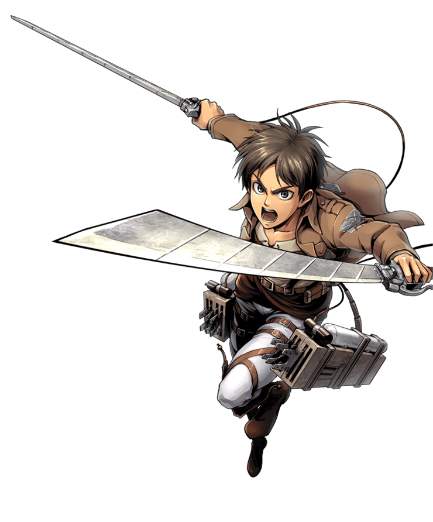

Eren Yeager (エレン・イェーガー Eren Yēgā?) was a former member of the Survey Corps.
He was the main protagonist of Attack on Titan. He lived in Shiganshina District with
his parents until the fall of Wall Maria, where he impotently witnessed his mother being
eaten by a Titan.[33] This event would lead to Eren's intense hatred towards the Titans
as he swore to wipe all of them off the face of the Earth.Eren was a young man of average
height and muscular build. His facial features strongly resembled his mother's; he had a
reasonably long, rounded face and sizable, expressive, gray eyes. His hair was short and black,
and his bangs fell in a natural, middle-parted, curtain-type style. After his training and during
his time as a soldier, he became very physically fit and muscular, although this was often unseen due
to his relatively baggy clothing